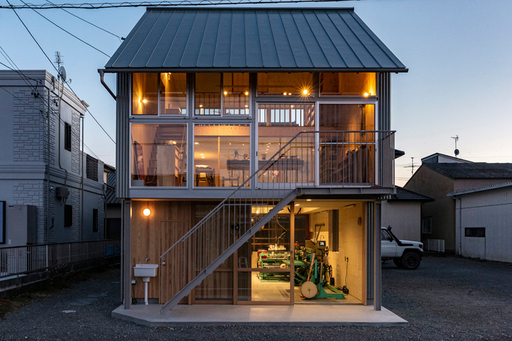
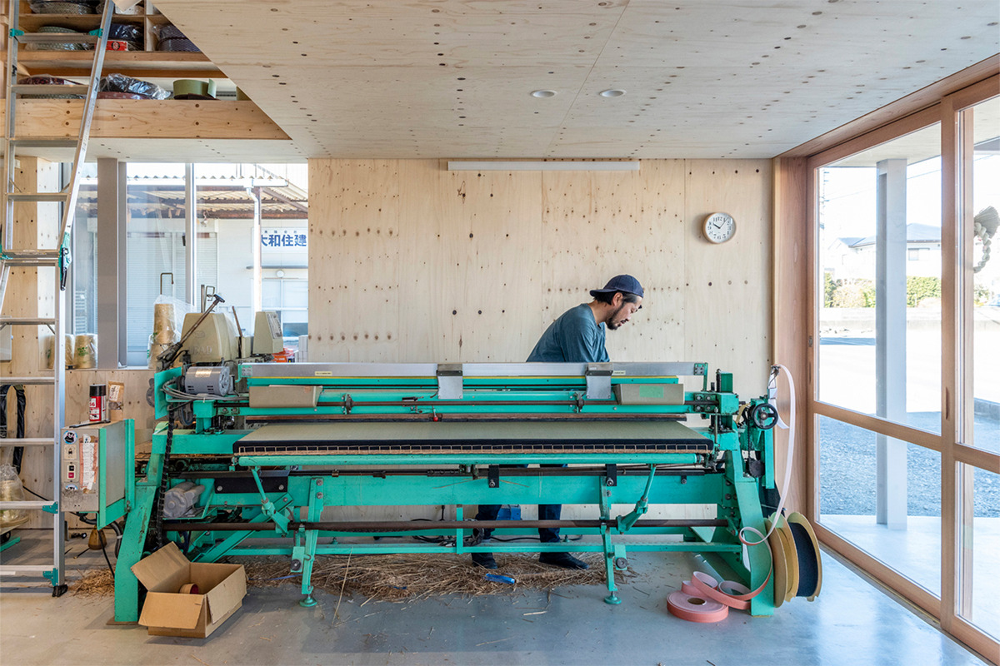
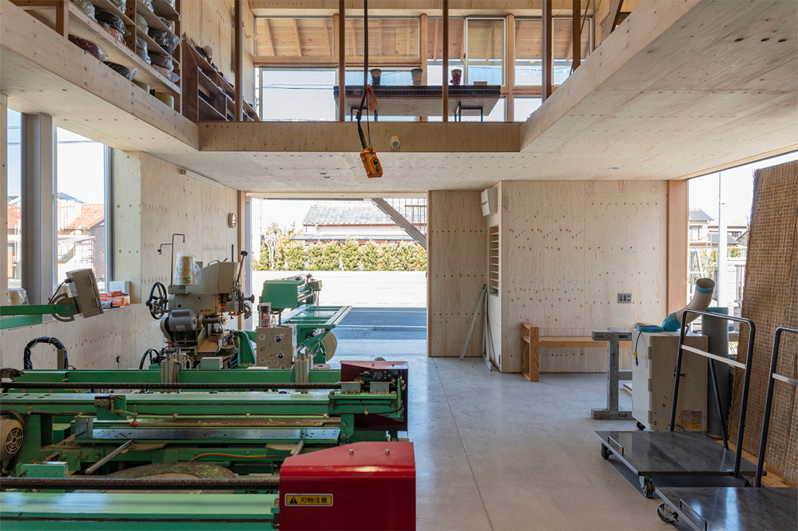
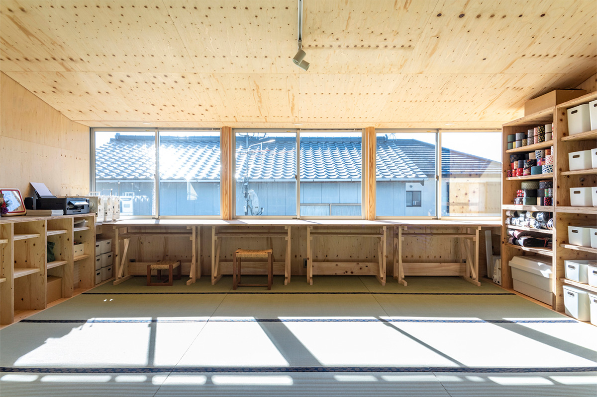
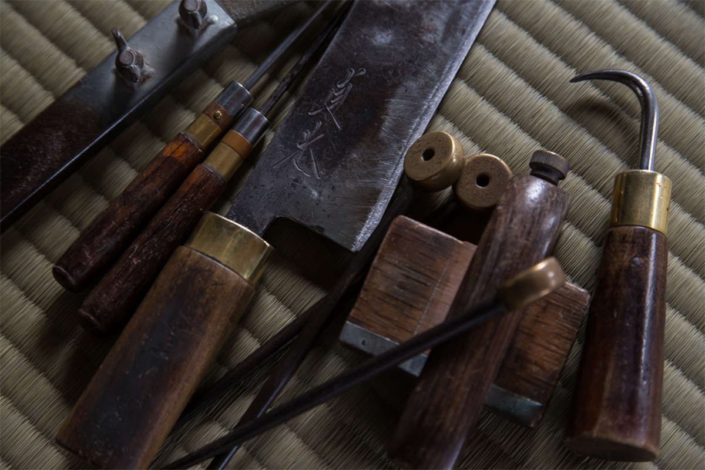
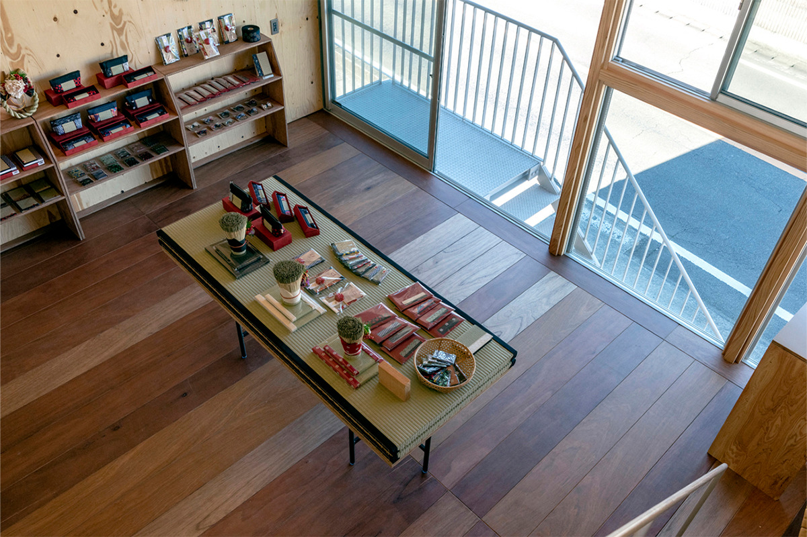
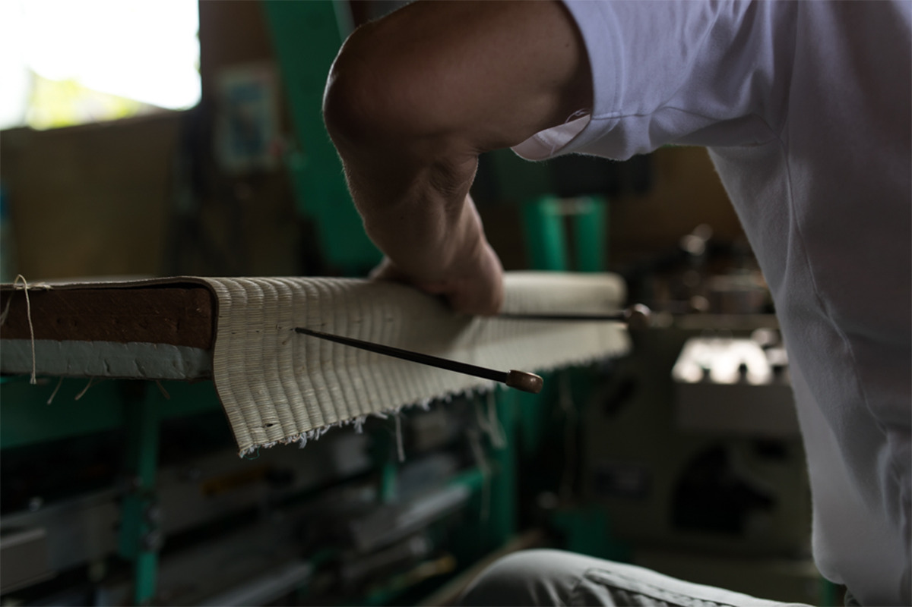
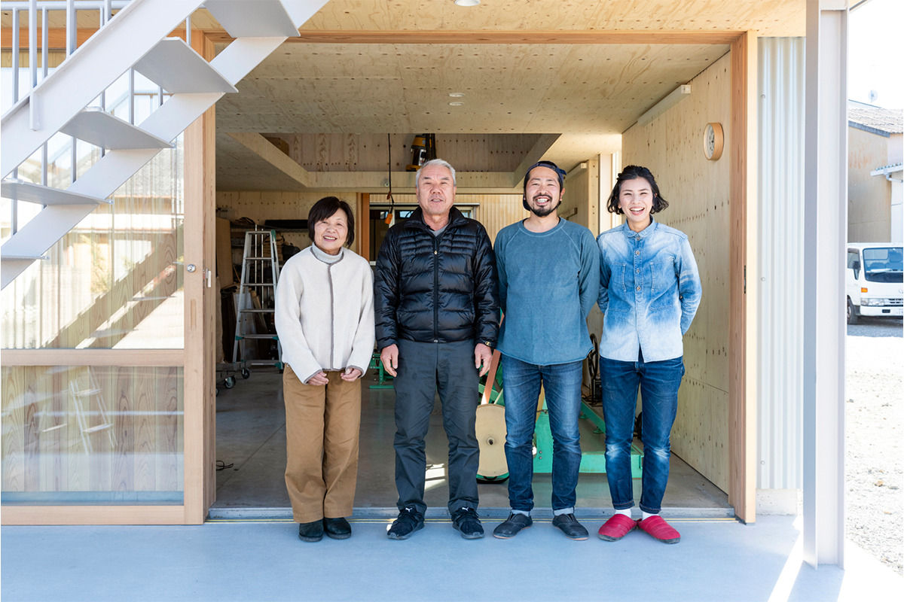

Префектура Сидзуока · Яидзу · ремесло
«Мацуба» в Яидзу: татами-мастерская за стеклом, лавка с изделиями из игусы и сладости с травяной пудрой

Татами-мастерская «Мацуба» работает в городе Яидзу с 1977 года. Когда старый цех обветшал, семья построила дом со стеклянными стенами, чтобы показать людям, как делают татами и чем хороша трава игуса.
Мастерская
Лавка, а не фабрика
«Мацуба» открылась в 1977 году в Яидзу, городе на побережье префектуры Сидзуока. Здесь делают татами из тщательно подобранных материалов, а ещё выпускают бытовые вещи из игусы, травы, из которой плетут покрытие татами, и из тканой каймы, которой обшивают его края. Через эти вещи мастерская и рассказывает о татами.
Около сорока лет спустя здание решили перестроить, и проект доверили архитектору из бюро в префектуре Сидзуока. Свою задачу он увидел так: татами-мастерская по сути ближе к обычной лавке, чем к заводу.

В любом японском квартале картина одна и та же: соседи приходят поменять татами и советуются с хозяином. Такая мастерская открыта для округи так же, как булочная или овощная лавка.
Татами к тому же редкий для современного дома материал. Пол из ламината или стеновые панели почти не требуют ухода, а за татами хозяева следят годами: приходят в мастерскую за советом, зовут мастера домой посмотреть, в каком они состоянии. Получается, что татами связывает людей. Поэтому, решил архитектор, рассказывать нужно не только о самом изделии, а обо всём, что с ним связано.
Дом
Три занятия под одной крышей
Причин для перестройки было две. Одноэтажный цех, который построил ещё прежний хозяин, обветшал. А семье понадобилось место, где можно показывать людям татами и игусу. В новом здании собрали всё вместе: цех, где делают татами, мастерскую, где жена хозяина шьёт изделия из игусы, и магазин.
Участок узкий по фасаду и глубокий, как у старых городских домов. Если смешать три функции, пропадёт смысл каждой. Если разделить их полностью, не получится показать игусу и татами как единое целое. Архитектор поставил пространства друг на друга, как кубики: цех внизу, магазин и мастерская изделий наверху. Этажи самостоятельны, но слегка сдвинуты друг относительно друга, поэтому между ними остаётся связь, и не только физическая.


В цехе на первом этаже стеклянные стены, и за работой мастеров можно наблюдать, чтобы татами стали людям ближе. На втором этаже продают вещи из игусы, табуреты и мебель, которые подходят к комнатам с татами. Здесь же угощают сладостями, например баскским чизкейком с пудрой из игусы, выращенной без пестицидов. В зале для занятий шьют изделия из игусы, занимаются йогой, каллиграфией ручкой-кистью и макияжем.
Ремесло
Каждый лист для того, кто будет на нём жить

Татами один из старейших напольных материалов Японии. С тех пор как в домах распространился паркет, комнат с татами становится всё меньше, и «Мацуба» тем внимательнее рассказывает о том, чем они хороши.
Мастера ездят туда, где растёт игуса, и слушают самих фермеров: что те думают о своей траве и чего от неё ждут. Это отношение они переносят в работу над каждым листом, чтобы тому, кто будет жить на этих татами, было по-настоящему уютно.

Чтобы о татами не забывали, мастерская сама придумывает, проектирует, шьёт и продаёт вещи из игусы. У татами много достоинств: приятная сухая гладкость под рукой, успокаивающий запах травы, красивый цвет нового листа на фоне каймы, лёгкий шелест, когда катаешься по полу. Игусу здесь ещё и едят: пудру из съедобной игусы, суперфуд, о котором мало кто знает, добавляют в печенье и другие сладости. Так у травы открываются новые возможности.

Татами мягкие, ароматные и приятные на ощупь, а ещё они регулируют влажность, что особенно кстати во влажном японском климате. Лист состоит из трёх слоёв: основы, верхней циновки и каймы. В наше время для них используют не только игусу, но и другие материалы, и в «Мацуба» тщательно выбирают каждый.
Татами меняют раз в 10–15 лет, и мастерская хочет, чтобы это событие было в радость. Поэтому здесь всегда есть японские циновки, у которых известен производитель, и около 50 видов каймы: однотонные, с японскими узорами и современными рисунками. Кайму подбирают под настроение комнаты.

В открытом, полном воздуха доме, который почему-то кажется знакомым с детства, собираются самые разные люди. Сюда стоит заглянуть, чтобы посмотреть, как рождается татами, и почувствовать, чем он хорош.
«Мацуба»
- Адрес
- префектура Сидзуока, Яидзу, Накасиндэн, 1005-5
- Телефон
- +81 54-624-9669
- Часы работы
- 9:00–17:00
- Выходные
- воскресенье и праздничные дни
Фото: rachishinya.